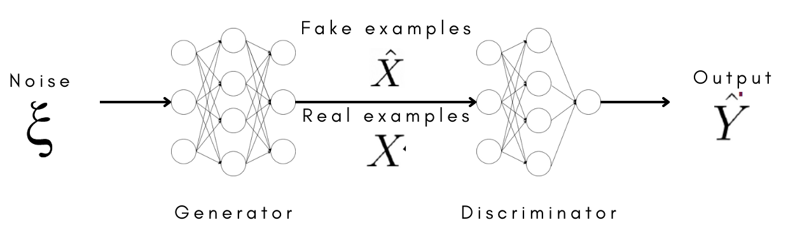
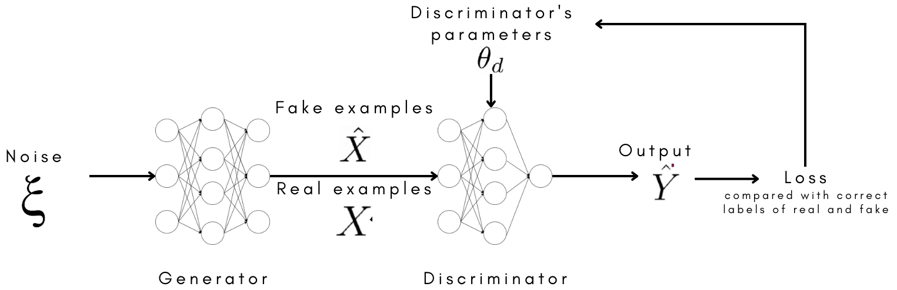
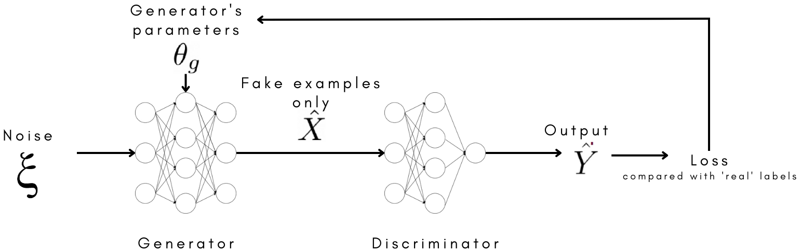
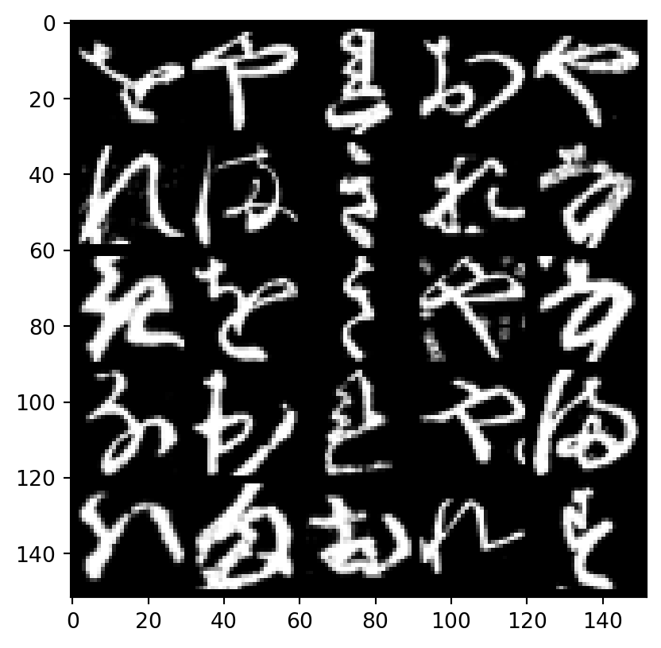

import torch
from torch import nn
from torchvision import datasets, transforms
from torch.utils.data import DataLoader
from torchvision.utils import make_grid
import matplotlib.pyplot as pltIn the last post, I briefed you the history and concept of Generative Adversarial Networks (GANs). In this post, we will get more technical, going into the training process as well as trying our hand creating a simple GAN model on my favourite dataset, KMNIST.
Concept - Training GANs:
Like any training process, the process GANs can be decomposed into feed-forward and backpropagation, though with distinct features from, say, training a classifier. The parameters updated after backpropagation can also be divided into two steps, for Discriminator and Generator. These are summed up in the images below:



Hopefully the ideas are not too complicated. If they are so, hopefully things will make more sense when we look at the codes.
Hands-on - Creating GANs:
The dataset:
First rule: always, always look at the data first. Now, KMNIST is a dataset inspired by the MNIST dataset of 10 hand-written digits. Here, we have 10 hand-written Kanji characters. Look at the provided examples, the handwriting surely looks messy, some almost unrecognizable from the modern version.

Similar to MNIST, a KMNIST image has only one channel. Let’s visualize one.
# Function learnt from GAN's Specialization Course 1 Week 1
def tensor_show(image_tensor, num_images=25, size=(1, 28, 28)):
# The original image tensor could be stored on GPU and
# have been flattened out for training, so we restore it
# first.
image_unflat = image_tensor.detach().cpu().view(-1, *size)
image_grid = make_grid(image_unflat[:num_images], nrow=5)
# torch uses (color channel, height, width) while
# matplotlib used (height, width, color channel)
# so we fix it here
plt.imshow(image_grid.permute(1, 2, 0).squeeze())
plt.show()batch_size = 32
dataloader = DataLoader(
datasets.KMNIST('data', download=True, transform=transforms.ToTensor()),
batch_size=batch_size,
shuffle=True)image_tensor = next(iter(dataloader))[0]
tensor_show(image_tensor)
The Discriminator:
The Discriminator is essentially a classifier, so we can define as with a normal classifier. It means that we can start with the good ol’ linear model, but I will skip a bit to the year 2015, when Deep Convolutional GAN was introduced and construct my GANs with a 3-layered convolutional architecture. To conveniently construct each layer, I will also define a general function to create a layer of arbitrary sizes. A not-last layer will have a convolution followed by batch normalization and LeakyReLU (batch normalization is there to stabilize GAN’s training. We will touch upon tricks to stabilize GAN’s training in the next post).
class Discriminator(nn.Module):
def __init__(self, im_chan=1, hidden_dim=56):
super().__init__()
self.disc = nn.Sequential(
self.make_disc_block(im_chan, hidden_dim),
self.make_disc_block(hidden_dim, hidden_dim),
self.make_disc_block(hidden_dim, 1, final_layer=True),
)
def make_disc_block(self, input_channels, output_channels, kernel_size=4, stride=2, final_layer=False):
if not final_layer:
return nn.Sequential(
nn.Conv2d(input_channels, output_channels, kernel_size, stride),
nn.BatchNorm2d(output_channels),
nn.LeakyReLU(negative_slope=0.25)
)
else: # Final Layer
return nn.Sequential(
nn.Conv2d(input_channels, output_channels, kernel_size, stride)
)
def forward(self, x: torch.Tensor):
# The input can be a tensor of multiple images
# We want to return a tensor with the possibility
# of real/fake for each image.
x = self.disc(x)
return x.view(len(x), -1)The Generator:
A point to note: convolution (or convolution/pooling) will reduce the dimensions of your data, essentially distilling the information to the output (the possibility of a class in a classifier). Meanwhile, Generator will make use of the transposed convolution operation, which increases the dimensions of data, essentially magnifying the noises into an image. (I will create a blog post about convolution in the future, in the meantime, check out this notebook as my draft.)
class Generator(nn.Module):
def __init__(self):
super().__init__()